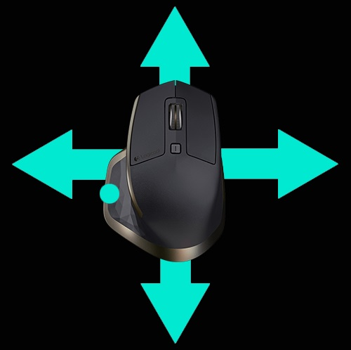

ジェスチャー
ジェスチャーを使うと、直観的で簡単な方法でオペレーティングシステムとアプリケーションを操作することができます。
ジェスチャーを使用して、文書のズームイン、ウェブページの閲覧、画像の回転などができます。
Logicool Optionsは、MX Masterマウスを使って実行できる様々なジェスチャーへのアクセスを提供します。
ジェスチャー セットの有効化
[マウス] タブを開き、強調表示されたジェスチャー ボタンをクリックします。
ボタン アクションのリストで [ジェスチャー] ボタンを選択すると、選択したセットの視覚的ガイドと共に、ジェスチャー セットが右側に表示されます。

別のセットを選択するまで、選択したセットはアクティブなままになります。
注：ジェスチャー アクションが割り当てられていないと、ジェスチャーは利用できません。（ジェスチャー ボタンをサム ボタン、ミドル ボタン、およびモードシフト ボタンに割り当てることもできます。）
ジェスチャーの実行
ジェスチャーを実行するには、ジェスチャー ボタンを押しながら、マウスを左右上下に動かします。
ジェスチャー ボタンをクリックすると、アクティブなジェスチャーに関連するアクションが実行されます。

詳細については、MX Masterイマージョン ガイドをご覧ください。